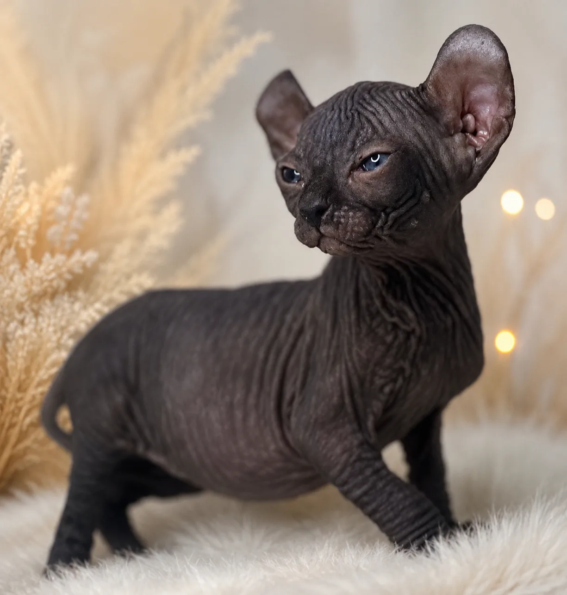

Elf
2 Kittens Currently Available
About the Elf Breed
The Elf cat is a rare and captivating breed recognized for its distinctive curled ears, elegant appearance, and affectionate personality. Combining the loving nature of the Sphynx with uniquely curved ears, the Elf cat has an extraordinary look that makes it truly unforgettable.
Elf cats are intelligent, playful, and highly social companions. They enjoy being close to their families and often seek attention, affection, and interaction throughout the day.
Known for their curious and outgoing nature, Elf cats thrive in loving homes and build strong bonds with both adults and children. Their friendly personalities often make them wonderful companions alongside other pets.
Like Sphynx cats, Elf cats require regular skin care and benefit from a warm indoor environment.
Breed Highlights
- ✔ Unique Curled Ears
- ✔ Affectionate & People-Oriented
- ✔ Intelligent & Curious
- ✔ Playful Personality
- ✔ Social with Families and Other Pets
- ✔ Rare & Distinctive Appearance
- ✔ Indoor Companion Breed
- ✔ Loves Attention & Human Interaction
Quick Facts
- Origin: United States
- Personality: Friendly, curious, affectionate
- Coat: Hairless or fine peach-fuzz texture
- Energy Level: High
- Grooming: Moderate skin care required
- Lifespan: 9–15+ years